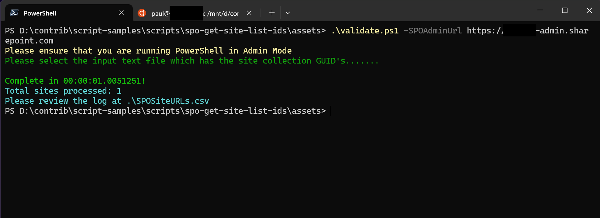

Get Site Ids to URL
Summary
Converts unique site IDs from a txt file to URLs using Microsoft Search for M365 Tenancy and exports to CSV.

This PowerShell script takes an input file containing one or more SharePoint online (Office 365) Site Collection Object IDs and converts them into the full URLs. It requires PnP Online module for connection to Office 365, performs a search query using these GUIDs as parameters, retrieves site details including their respective URL addresses from each result row.
Note: Above description uses AI to describe the script.
param(
[Parameter(Mandatory=$true)]
[ValidatePattern("^https://.*\.sharepoint\.com$", ErrorMessage="Please enter a valid SharePoint Online Admin URL")]
[string]$SPOAdminURL = $(Read-Host -Prompt "Please enter the SharePoint Online Admin URL"),
[Parameter(Mandatory=$false)]
[string]$log = ".\SPOSiteURLs.csv"
)
## Load Form Selector
Add-Type -AssemblyName System.Windows.Forms
function Select-FileDialog {
param([string]$Title, [string]$Directory, [string]$Filter="All Files (*.*)|*.*")
$objForm = New-Object System.Windows.Forms.OpenFileDialog
$objForm.InitialDirectory = $Directory
$objForm.Filter = $Filter
$objForm.Title = $Title
$Show = $objForm.ShowDialog()
if ($Show -eq "OK") {
return $objForm.FileName
} else {
Write-Error "Operation cancelled by user."
exit
}
}
## Check Execution Policy
$currentPolicy = Get-ExecutionPolicy
if ($currentPolicy -ne "Unrestricted") {
Write-Host "Current execution policy is $currentPolicy. This script requires it to be Unrestricted." -ForegroundColor Yellow
try {
Set-ExecutionPolicy Unrestricted -Scope Process -Force
Write-Host "Execution policy set to Unrestricted for this session." -ForegroundColor Green
} catch {
Write-Error "Failed to set execution policy. Please run PowerShell as an administrator and try again."
exit
}
}
## Check to see if PNP is installed
Write-Host "Please ensure that you are running PowerShell in Admin Mode" -ForegroundColor Yellow
$CheckPNP = Get-Module -Name PnP.PowerShell -ListAvailable
if ($CheckPNP -eq $null) {
Write-Host "It appears you do not have SharePoint Online PNP installed!" -ForegroundColor Red
$Force = Read-Host "Would you like to install SharePoint Online PNP Module? Type 'Y' to force or type 'N' to continue"
if ($Force -like "y") {
try {
Install-Module -Name PnP.PowerShell -Force -ErrorAction Stop
Import-Module PnP.PowerShell -ErrorAction Stop
Write-Host "PnP PowerShell module installed successfully." -ForegroundColor Green
} catch {
Write-Error "Failed to install PnP PowerShell module. Exiting script."
exit
}
} elseif ($Force -like "n") {
Write-Host "Continuing without install of PNP and assuming module was not detected properly" -ForegroundColor Yellow
}
}
# Select Input File
Write-Host "Please select the input text file which has the site collection GUID's......." -ForegroundColor DarkGreen
$InputFile = Select-FileDialog -Title "Select the input file of site ID's to convert to URL's"
if (-not (Test-Path -Path $InputFile -PathType Leaf)) {
Write-Error "The selected file does not exist. Exiting script."
exit
}
$cnt = Get-Content $InputFile
$starttime = Get-Date
## Connect to PNP PowerShell
try {
Connect-PnPOnline -Url $SPOAdminURL -Interactive -ErrorAction Stop
} catch {
Write-Error "Failed to connect to SharePoint Online. Please check your admin URL and credentials."
exit
}
## Create Result Set
[System.Collections.Generic.List[PSCustomObject]] $results = New-Object System.Collections.Generic.List[PSCustomObject]
$count = 0
foreach ($siteid in $cnt) {
try {
Write-Progress -Activity 'Processing sites..' -Status $siteid -PercentComplete ($count / $cnt.count * 100)
$query = "SiteId:$siteid contentClass:STS_Site"
$result = Submit-PnPSearchQuery -Query $query -ErrorAction Stop
foreach ($row in $result.ResultRows) {
$res = New-Object psobject
foreach ($key in $row.Keys) {
$res | Add-Member -MemberType NoteProperty -Name $key -Value $row[$key]
}
$results.Add($res)
}
$count++
} catch {
Write-Host "Failed to process $siteid. Error: $_" -ForegroundColor Red
continue
}
}
try {
$results | Export-Csv -Path $log -NoTypeInformation -Force -Append
} catch {
Write-Error "Failed to export results to CSV. Error: $_"
exit
}
$duration = (Get-Date) - $starttime
Write-Host "`nComplete in $($duration)!" -ForegroundColor Green
Write-Host "Total sites processed: $count" -ForegroundColor Cyan
Write-Host "Please review the log at $($log)" -ForegroundColor Cyan
Check out the PnP PowerShell to learn more at: https://aka.ms/pnp/powershell
The way you login into PnP PowerShell has changed please read PnP Management Shell EntraID app is deleted : what should I do ?
Source
This script was first created on PnP PowerShell and transferred over in Dec 2024. https://github.com/pnp/powershell
Contributors
| Author(s) |
|---|
| Sam Larson |
| Paul Bullock |
Disclaimer
THESE SAMPLES ARE PROVIDED AS IS WITHOUT WARRANTY OF ANY KIND, EITHER EXPRESS OR IMPLIED, INCLUDING ANY IMPLIED WARRANTIES OF FITNESS FOR A PARTICULAR PURPOSE, MERCHANTABILITY, OR NON-INFRINGEMENT.